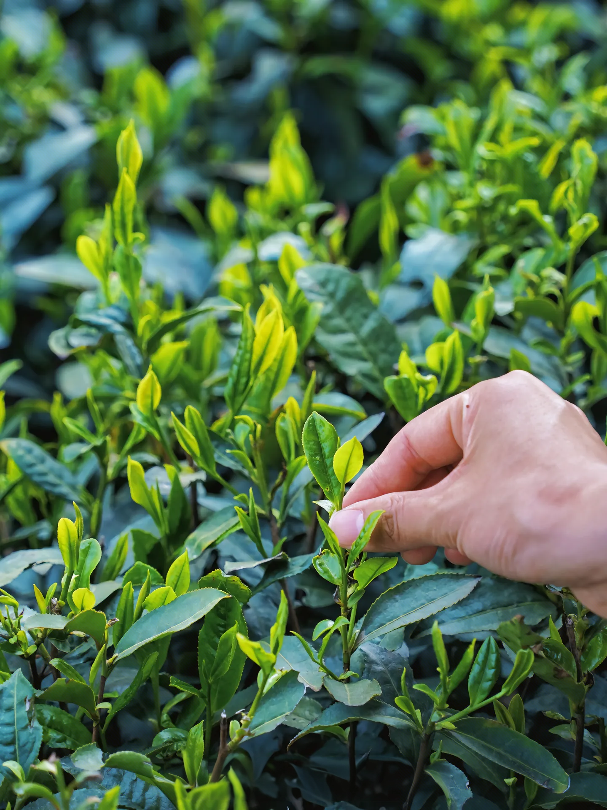
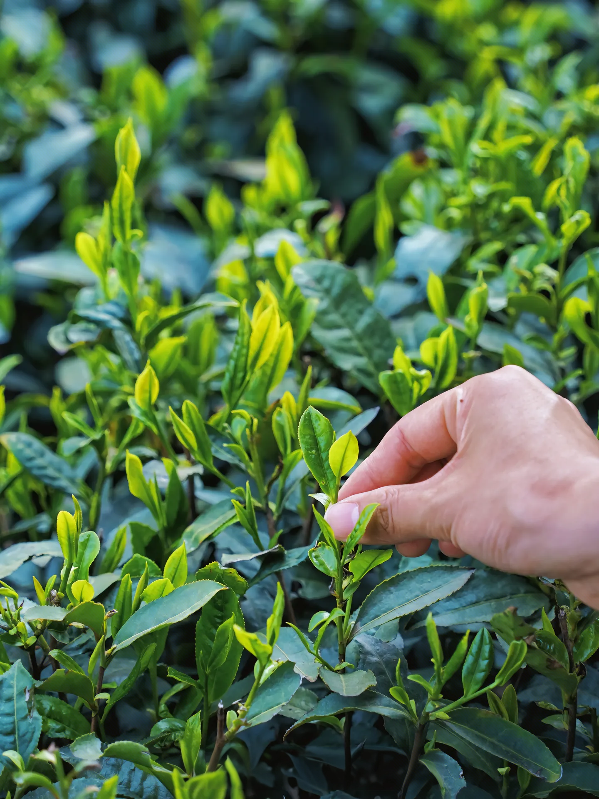
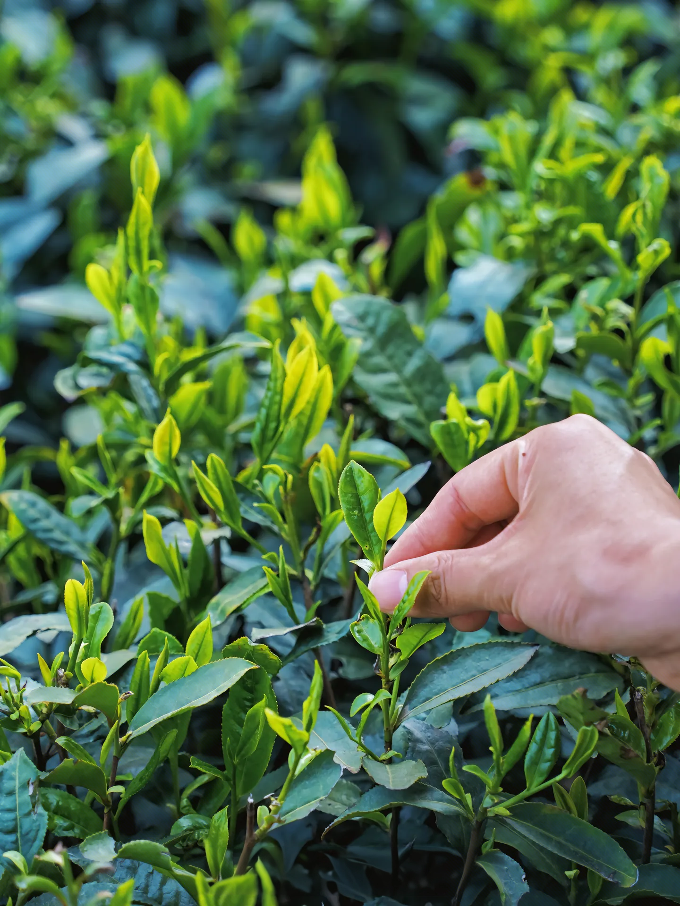

品牌故事与乡村振兴
一片叶子，富了一方百姓
六安瓜片是国家级非物质文化遗产。我们通过数字化手段，不仅保护了品牌，更让每一位辛勤劳作的茶农获得应有的回报。
 


正在从区块链读取数据...
常见的合同模板与说明：围绕农业种植、销售、电商代经营等高风险环节，结合国家市场监管总局规范文本与茶叶特性，提供标准化模板，便于多元主体使用。以下模板可直接下载：
智能缔约辅助工具：上传合同后识别不公平条款
违约情形识别与赔偿计算辅助
侵权比对智能辅助
赔偿辅助计算与维权流程指引（行政举报与诉讼）
六安瓜片是国家级非物质文化遗产。我们通过数字化手段，不仅保护了品牌，更让每一位辛勤劳作的茶农获得应有的回报。
